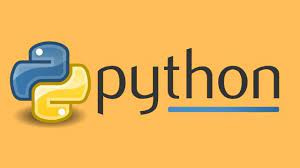
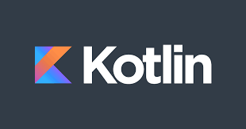
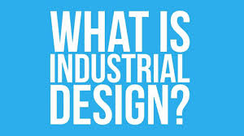
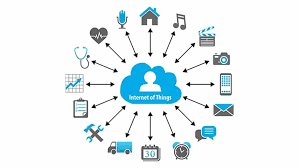
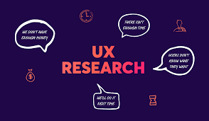

AkiraChix is a non-profit organisation which offers young women hands-on technical training in market-relevant technology, entrepreneurship and life skills, to positively impact their lives and communities and close the gender gap in the technology field.
AkiraChix is a trailblazer enabling women access opportunities to connect, learn and collaborate in IT as we continue to build a community of practice.
Javascript

Javascript is a programming language for web that mainly adds functionality to website or webpage
Python

Python is is an interpreted high-level general-purpose programming language which is based on Object oriented Programming language,which is used in data science.
Kotlin

Kotlin is an open-source, statically-typed programming language that supports
both object-oriented and functional programming
Industrial design

Industrial design is a process of design applied to products that are to be manufactured through techniques of mass production
Internet Of Things

The Internet of Things(IOT) refers to the billions of physical devices around the world that are now connected to the internet, all collecting and sharing data
Professional development
Professional development refers to instructors developing and improving their skills
to better meet the needs of their students that help them in their daily life
UX Research

UX (user experience) research is the systematic study of target users and their requirements, to add realistic contexts and insights to design processes. UX researchers adopt various methods to uncover problems
UI/UX Design
The UI/UX Design Specialization brings a design-centric approach to user interface and user experience design, and practical, skill-based,..
Start Up 101
Area life science/healthcare entrepreneurship course and we learn How to Build a Successful Business and get skills about entrepreneurs'life or entrepreurship